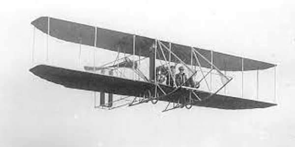

Wilbur Wright and Orville Wright
The Wright Brothers
Wilbur Wright
Born : April 16, 1867 (Millville, Indiana)
Death : May 30, 1912 (Dayton, Ohio) (aged 45)
Orville Wright
Born : August 19, 1871 (Dayton, Ohio)
Death : January 30, 1948 (Dayton, Ohio) (aged 76)
December 17, 1903 : Made the first controlled, sustained flight of a powered heavier-than-air aircraft with the Wright Flyer.
1904–1905 : Developed the longer-running and more aerodynamic Wright Flyer II. Followed by the first truly practical fixed-wing aircraft, the Wright Flyer III.
Wright Model B

Role : Sports plane
Manufacturer : Wright Company
First flight : 1910
Primary users : United States Army and United States Navy
The The Wright Model B was an early pusher biplane designed by
the Wright brothers in the United States in 1910. It was the first of their designs to be built in quantity.
Unlike the Model A, it featured a true elevator carried at the tail rather than at the front.
It was the last Wright model to have an open-frame tail.
Douglas DC-3


| Role | Airliner and transport aircraft |
|---|---|
| National origin | United States |
| Manufacturer | Douglas Aircraft Company |
| First flight | December 17, 1935 |
| Introduction | 1936, with American Airlines |
| Status | In service |
| Produced | 1936–1942, 1950 |
| Number built | 607 |
| Developed from | Douglas DC-2 |
| Variants | Douglas C-47 Skytrain Douglas R4D-8/C-117D Lisunov Li-2 Showa/Nakajima L2D Basler BT-67 Conroy Turbo-Three Conroy Tri-Turbo-Three |
The DC-3 served and dominated, the infant airline business from its first appearance. In the mid-1940s, all but 25 of the 300 airline planes operating in the United States were DC-3s. Its wartime adaptations were simple and effective....
It was used to transport passengers, fully armed paratroopers, wounded troops, military cargo, and anything else that could fit through its cargo doors and weighed not much more than three tons. A version that carried only troops was called the C-53. The airplane was also used to tow gliders and was even converted to an efficient, high-speed glider by simply removing its engines and other nonessential weight. As a glider, it could carry 40 fully armed troops at a top towing speed of 290 miles per hour (464 km per hour)—90 mph faster than any previous transport glider and 26 percent faster than its own top speed as a transport airplane.
Today
The DC-3 continues to fly in active commercial and military service as of 2021, eighty-six years after the type's first flight in 1935. There are still small operators with DC-3s in revenue service and as cargo aircraft. Current uses of the DC-3 include passenger service, aerial spraying, freight transport, military transport, missionary flying, skydiver shuttling and sightseeing. The very large number of civil and military operators of the DC-3/C-47 and related types makes a listing of all the airlines, air forces and other current operators impracticable.
Boeing 737
| Role | Narrow-body airliner |
|---|---|
| Origin | United States |
| Manufacturer | Boeing |
| First flight | April 9, 1967 |
| Introduction | February 10, 1968 |
| Status | In service |
| Primary users | Southwest Airlines |
| Produced | 1966–present |
| Number built | 11,089 as of July 2022[update][1] |
| Variants | Boeing T-43 |
| Developed into |